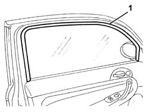
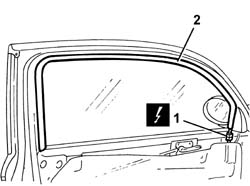

7005D33 channel of door descending glass inner guide (one) lh or rh on front side door - r r
- Path
- Procedures > 70 FITTINGS > 7005 PASSENGER COMPARTMENT FRONT SIDE DOORS > 7005D front side door window glasses > 7005D33 channel of door descending glass inner guide (one) lh or rh on front side door - r r
- Kind
- repair procedure (removal / refitting; the operation number is the code)
- Applies to
- all engines; all production periods
- Interactive page
- https://sloeber94.github.io/elrnDB-a147/en/#/3025668
Applies to: all engines; all production periods
 Removing
Removing
 Refitting
RefittingLower the window completely.
If it is not switched on then proceed as follows.
1. Remove the channel from the housing.

Applies to: all engines; all production periods
If the car is fitted with an anticrush device on the windows, proceed as follows:
7005C44 interior handle panel - r r
7005M14 ELECTRIC WINDOWS, REAR VIEW MIRRORS and CENTRAL LOCKING SWITCH unit on driver's front door - R.R. (for driver's door)
7005M12 passenger side front door electrically operated window switch - r r (for passenger door)
7040E24 lower courtesy light indoor panel - r+r
7005E08 front side door interior panel r r
1. Disconnect the electrical connections.
 | Name | Connector |
|---|---|---|
1 | Front door anti-crush sensor |
| Name | Connector |
|---|---|---|
1 | Front door anti-crush sensor |
2. Prise up the channel and sensor from the housing.

Applies to: all engines; all production periods
Refitting
RemovingCheck the condition of the channel.
With the window completely lowered, fit the channel in the housing.
If the car is fitted with an anticrush device, proceed as follows:
Connect the electrical connection
7005E08 front side door interior panel r r
7040E24 lower courtesy light indoor panel - r+r
7005M12 passenger side front door electrically operated window switch - r r (for passenger door)
7005M14 ELECTRIC WINDOWS, REAR VIEW MIRRORS and CENTRAL LOCKING SWITCH unit on driver's front door - R.R. (for driver's door)
7005C44 interior handle panel - r r
Test sensor operation by preventing the window from closing completely using a rigid object and ensuring the window stops and goes back down.
Topics linked from this page (7)
- 7005C44 interior handle panel - r r
- 7005E08 front side door interior panel r r
- 7005M12 passenger side front door electrically operated window switch - r r
- 7005M14 ELECTRIC WINDOWS, REAR VIEW MIRRORS and CENTRAL LOCKING SWITCH unit on driver's front door - R.R.
- 7040E24 lower courtesy light indoor panel - r+r
- K22 Front door anti-crush sensor
- K23 Front door anti-crush sensor